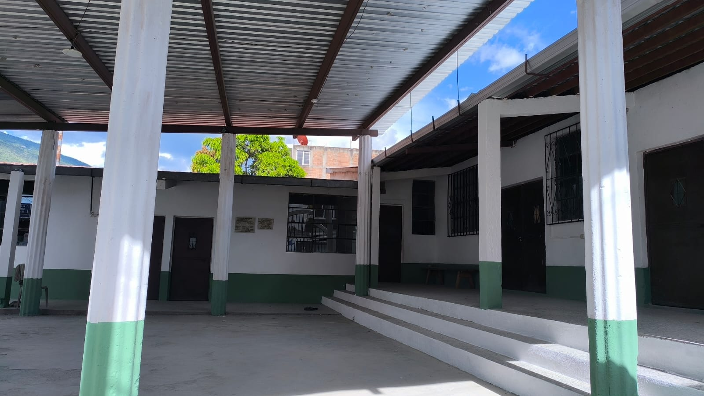
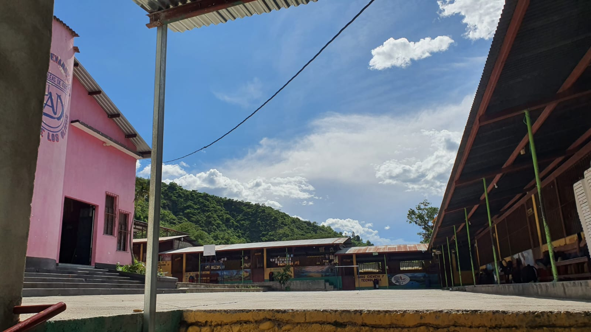
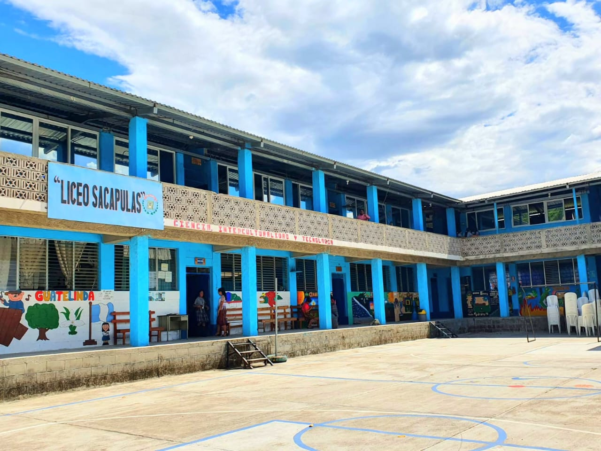

En el mes de marzo del año 2001, la junta directiva de la comunidad lingüística Sakapulteka de la Academia de Lenguas Mayas de Guatemala,
Constituida por las siguientes personas: Presidente Jesús Aceytuno Felipe, vicepresidente Ofelia Andrea Solís Aceytuno, Secretaria Justa Rufina
López Aceytuno, Tesorera María Dionicio López, Vocal primero Pedro Vásquez Aceytuno, Vocal segundo Cruz Pajarito Lancero 2°,
dispusieron crear un centro educativo para ayudar a familias necesitadas, entre ellos jóvenes de ambos sexos, y fortalecer el recurso humano
para el idioma Sakapulteko, como objetivo principal del proyecto.

Los primeros días donde todo comenzó.
Nuestro Crecimiento🌱

Con el paso de los años el centro educativo liceo sacapulas fue ampliando las instalaciones y trasladandonos a otro lugar.
Dentro de las actividades, se realizó un diagnóstico a personas individuales e instituciones locales y se determinó que era necesario
la carrera de magisterio Bilingüe Intercultural para implementar el idioma Sakapulteko dentro del pensum de estudios. Así fue como se
iniciaron los trámites ante las autoridades locales de educación y salud, así mismo se convocó a reuniones masivas y se inicia la recepción
de expedientes y seleccionar a los catedráticos para optar a cargos y cursos que serán asignados para impartir y para la dirección se hizo
entre tres personas, saliendo electo al Profesor de Educación Media Onofre Felipe Gómez, como director, quien funge hasta la fecha, iniciando
los trámites ante las autoridades de la Dirección Departamental de Educación y el Ministerio de Educación, con fecha 27 de diciembre del año
2001, fue emitida la Resolución Ministerial No. 151-2001, donde se autoriza la creación y funcionamiento del centro educativo con el nombre
de “Liceo Sacapulas” la carrera de Magisterio de Educación Primaria Bilingüe Intercultural (Sakapulteco-Español) con el pensum de estudios
de la Malla Curricular.
Nuestro Presente y Futuro💡
A partir del 2 de enero de 2002, se iniciaron las inscripciones para el ciclo escolar y las clases respectivas, instalándose
en la cofradía San Francisco por no contar con local propio, gracias a los señores de la cofradía de aquel entonces quienes
accedieron el espacio para que este centro educativo diera luz verde a las actividades y clases, con el apoyo de los catedráticos.
Posteriormente se gestionó la carrera de Perito Contador con Orientación en Computación, siendo autorizada bajo la Resolución No.
156-2002, de fecha 16 de agosto de 2002, quien fue gestionada por el señor director del Plantel. Siempre con el lema de “Orden y
Disciplina”.
Hasta el año 2005, la junta directiva se constituyó en una Asociación K’aslemal Qa tinimit que quiere decir (Bienestar del Pueblo)
como el presidente Pedro Vásquez Aceytuno, Secretario Jesús Aceytuno Felipe ,Tesorera Ofelia Andrea Solis Aceytuno, con el objetivo de
captar fondos para el mismo centro educativo y en marzo del año 2007, se trasladó Liceo Sacapulas, al Colegio Monte de los Olivos por
su crecimiento en población escolar y para dar un mejor servicio a la comunidad educativa y se ha entregado varias promociones al pueblo...................

Hoy somos un centro educativo reconocido por su excelencia y compromiso con las nuevas generaciones.